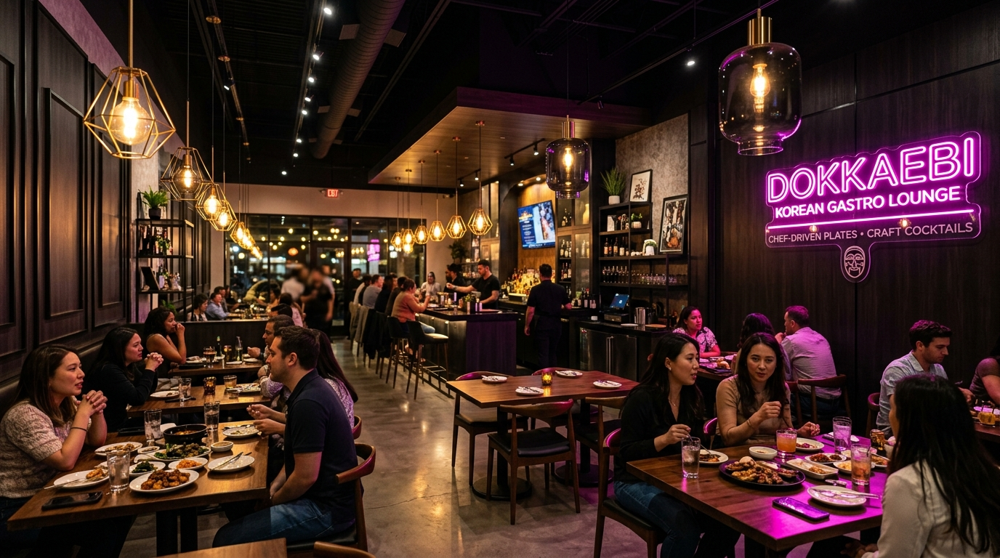

Operating Schedule
Lunch (Daily): 11:30 AM – 2:30 PM
Dinner Hours:
Mon – Thu: 5:00 PM – 12:00 AM
Fri – Sat: 5:00 PM – 2:00 AM
Sunday: 5:00 PM – 10:00 PM
Join us in ParkTowne Village for daytime lunch or late-night soju and Korean small plates.

Lunch (Daily): 11:30 AM – 2:30 PM
Dinner Hours:
Mon – Thu: 5:00 PM – 12:00 AM
Fri – Sat: 5:00 PM – 2:00 AM
Sunday: 5:00 PM – 10:00 PM
ANJU Korean Dining & Bar
1600 East Woodlawn Road
Charlotte, NC 28209
Located in ParkTowne Village.
Phone: (704) 900-7347
To ensure our kitchen can serve full hot pot and K-BBQ meals properly, last seating is strictly 30 minutes prior to closing time every evening.